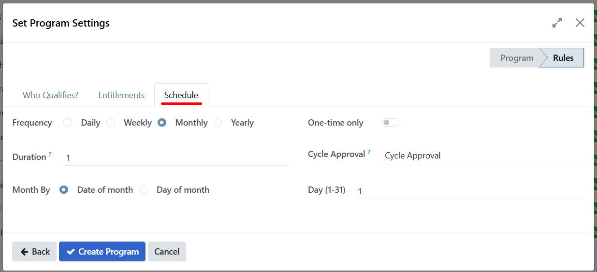
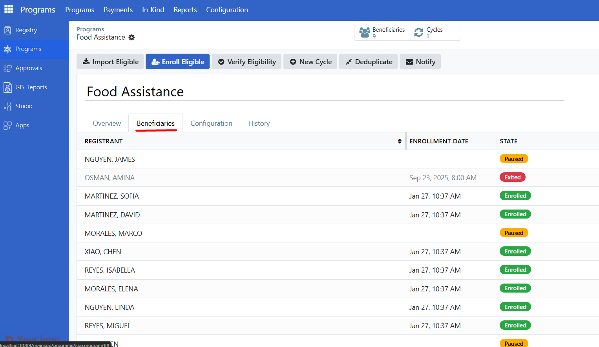
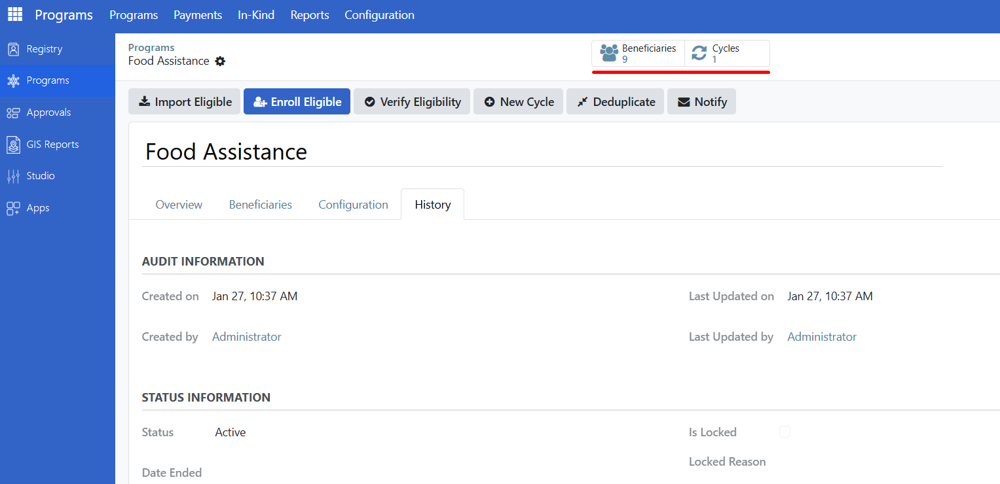

Create programs
Contents
Create programs#
Applies to: SP-MIS
What you will learn#
This guide explains the core concepts of OpenSPP programs. By the end, you will understand:
What a program is and what information it contains
How to create a new program using the wizard
How programs, cycles, and entitlements connect
The different states a program can be in
How to navigate the program interface
What is a program?#
A program is a social protection intervention that delivers benefits to eligible registrants. Examples include:
Monthly cash transfers to low-income households
Food assistance for families with children under 5
Emergency relief payments during disasters
Each program defines:
Component |
Purpose |
|---|---|
Target type |
Who can enroll (individuals or groups/households) |
Eligibility rules |
Criteria that determine who qualifies |
Entitlement rules |
How benefit amounts are calculated |
Cycles |
Time periods for benefit distribution |
How programs, cycles, and entitlements connect#
Program
|
+-- Beneficiaries (enrolled registrants)
|
+-- Cycle 1 (January 2025)
| |
| +-- Entitlement for Beneficiary A
| +-- Entitlement for Beneficiary B
| +-- Entitlement for Beneficiary C
|
+-- Cycle 2 (February 2025)
| |
| +-- Entitlement for Beneficiary A
| +-- Entitlement for Beneficiary B
| +-- Entitlement for Beneficiary C
|
+-- Cycle 3 (March 2025)
|
+-- (entitlements generated when cycle is prepared)
The relationship works like this:
Registrants are imported into a program
Eligibility is verified to confirm they qualify
Verified registrants become beneficiaries
For each cycle, entitlements are generated for all beneficiaries
Entitlements are approved and benefits are distributed

Navigate the program interface#
Finding programs#
Click Programs in the main menu.

Click Programs in the submenu.

The program list shows all programs you have access to.
Program List Columns#
Column |
Description |
|---|---|
Name |
Program name |
Target Type |
Group (households) or Individual |
Beneficiaries |
Number of enrolled beneficiaries |
Cycles |
Number of cycles created |
State |
Active or Ended |

Creating a new program#
To create a new program, you'll use a step-by-step wizard that guides you through configuring all the necessary settings.
Accessing the creation wizard#
Navigate to the Programs list (see Finding Programs above).
Click the Create button in the top-left corner of the Programs list.
The program creation wizard will open.

Note
Permissions required: You must have System Administrator or Program Manager role to create programs. If you don't see the Create button or it's grayed out, contact your administrator.
Step 1: Basic program information#
The first step collects essential details about your program:
Field |
Description |
Required |
|---|---|---|
Program Name |
A descriptive name for your program (e.g., "Cash Transfer for Vulnerable Families") |
Yes |
Target Type |
Choose who the program targets: |
Yes |
• Group: Evaluates entire families/households for eligibility |
||
• Individual: Evaluates individual people regardless of family |
||
Benefit Type |
Type of benefit to be distributed: Cash for monetary programs, or In-Kind for goods or services (e.g., food rations, hygiene kits) |
Yes |
Currency |
The currency used for this program (e.g., USD, PHP, EUR). Required for Cash programs; not used for In-Kind. |
Yes (for Cash) |
When you choose In-Kind, you will define which products and quantities beneficiaries receive in the Items step. Those products must be created first under Programs > In-Kind > Products (see Manage in-kind products).
Example (Cash):
Program Name: "Monthly Food Assistance Program"
Target Type: Group (households)
Benefit Type: Cash
Currency: USD
Example (In-Kind):
Program Name: "Emergency Food Ration Program"
Target Type: Group (households)
Benefit Type: In-Kind
Currency: (optional for in-kind)

After filling in these fields, click Next: Configure Program to proceed.
Step 2: Configure eligibility#
This step defines who is eligible to participate in your program. The wizard shows a tab labeled Who Qualifies?.

Eligibility criteria options#
You can configure eligibility in two ways:
Predefined criteria (Dropdown selection):
Select from common eligibility rules like:
"Households with Children Under 5"
"Elderly Individuals (65+)"
"Single Parent Households"
And other predefined options

Advanced criteria (Custom expressions):
Click Advanced to reveal a text field
Enter custom eligibility expressions using registry field names
Example:
members.exists(m, m.income < 10000)(Groups with at least one member that has income < 10000)

Step 3: Configure entitlements#
Click the Entitlements tab to define what beneficiaries will receive.
Adding an entitlement line#
Click Add a line at the bottom of the entitlements section.

A popup window appears with the following fields:
Field |
Description |
Options |
|---|---|---|
Amount Formula |
How the benefit amount is calculated |
• Fixed Amount: Same amount for everyone |
Base Amount |
The fixed amount (if using Fixed Amount) |
Enter a number (e.g., 1200) |
Currency |
Currency for this entitlement |
Usually matches program currency |
Example:
Amount Formula: Fixed Amount
Base Amount: 1200
Currency: USD

Click Save & Close after configuring the entitlement.
Note
You can add multiple entitlement lines if your program provides different types of benefits or uses different formulas for different beneficiary groups.
Configuring approval workflow#
The approval workflow determines which user role can approve entitlements for this program. When you select an approver group, only users with that role will be able to approve entitlements.
In the entitlements configuration, locate the Approver Group field.
Select the user role that should have approval authority for entitlements in this program.

Important
Role restriction: The role you select in the Approver Group field will be the only role that can approve entitlements for this program. Users with other roles will not see the approval option, even if they have program management permissions.
Example:
Approver Group: Program Cycle Approvers
Only users assigned the "Program Cycle Approvers" role can approve entitlements for this program.
Step 3 (continued): In-kind programs — configuring items#
If you selected Benefit Type: In-Kind in Step 1, the wizard shows additional In-Kind Settings and an Items tab. Use these to define which products beneficiaries receive and in what quantity.
Note
Prerequisite: Before creating an in-kind program, an administrator (or user with Stock Manager access) must create the products under Programs > In-Kind > Products. Those products appear in the Product dropdown when you add lines in the Items tab. See Manage in-kind products.
In-Kind Settings#
Option |
Description |
|---|---|
Manage stock movements (inventory) |
When enabled, the system tracks inventory and can trigger stock movements when entitlements are approved. An Inventory Settings tab appears where you select a warehouse. |
Evaluate one item |
When enabled, entitlement rules are evaluated per item (e.g., for conditional quantities). |
Items tab#
In the Items tab, add one or more lines that define what each beneficiary receives:
Field |
Description |
|---|---|
Product |
Select a product from the in-kind product catalog (the same list as Programs > In-Kind > Products). You cannot create new products here; they must exist in the catalog first. |
Quantity |
Number of units per beneficiary (e.g., 2 boxes, 5 kg). |
UoM |
Unit of measure (usually filled from the product). |
Multiplier field (optional) |
Registry field used to multiply quantity (e.g., number of household members). |
Max multiplier (optional) |
Cap on the multiplier value. |
Click Add a line in the Items list.
Choose a Product from the dropdown.
Enter Quantity and confirm UoM.
Optionally set Multiplier field and Max multiplier if quantities depend on beneficiary attributes.
Save the line. Add more lines as needed for multiple products per beneficiary.

Inventory Settings tab (when "Manage stock movements" is enabled)#
If you enabled Manage stock movements (inventory) in In-Kind Settings, an Inventory Settings tab appears. Select the Warehouse from which stock will be reserved or moved when in-kind entitlements are approved.

Step 4: Configure distribution schedule#
Click the Schedule tab to set how often benefits are distributed.

Field |
Description |
Options |
|---|---|---|
Recurrence |
How often cycles are created |
• Daily |
Day of Month |
When monthly cycles start (if Monthly selected) |
• Specific date (e.g., 3rd of each month) |
Day of Week |
Which day(s) for weekly distribution (if Weekly selected) |
Monday, Tuesday, Wednesday, etc. |
One-time Distribution |
Check this if the program runs only once |
Creates a single cycle with no recurrence |
Cycle Approval |
Approval definition configured from the Approvals section. This is where you define which role approves cycles. Select an approval workflow or use auto-approve |
• Cycle Approval: Requires approval before distribution (select an approval definition) |
Example:
Recurrence: Monthly
Day of Month: 1st of each month
Cycle Approval: Cycle Approval (requires manual approval)
Approver Group: Program Cycle Approvers
Only users assigned the "Program Cycle Approvers" role can approve cycles for this program.
Important
Role Restriction: The role you select in the Approver Group field will be the only role that can approve cycles for this program. Users with other roles will not see the approval option, even if they have program management permissions.
One-time distribution#
When you enable the One-time Distribution slider, the program will automatically:
Generate a single cycle - One cycle is created immediately when the program is created
Auto-import all enrolled beneficiaries - All beneficiaries currently enrolled in the program are automatically added to this cycle
Use the schedule fields for timing - The cycle's date and timing are based on the values you entered in the Day of Month, Day of Week, and other schedule fields
Important
Important limitations: When one-time distribution is enabled:
No additional cycles will be automatically generated after the initial cycle
The program will not create recurring cycles based on the recurrence settings
This is ideal for emergency relief programs, one-time grants, or special distribution events
When to use one-time distribution:
Emergency relief payments
One-time grants or bonuses
Special event distributions
Programs that don't require recurring payments
Completing program creation#
Review all your settings in the wizard.
Click Create Program at the bottom of the wizard.

The program will be created and you'll be taken to the program form.
The program status will show as Active.

What happens after creation?#
Once created, your program will:
Appear in the Programs list
Be ready to accept beneficiary enrollments
Have all the configuration settings you defined available in the Configuration tab
Allow you to create cycles according to your schedule settings
You can edit any of these settings later by opening the program and going to the Configuration tab.
Program form overview#
The program form has four main tabs:
Overview tab#
Shows basic program information and recent cycles:
Field |
Description |
|---|---|
Name |
Program name |
Target Type |
Group or Individual |
Company |
Organization running the program (if multi-company) |
Beneficiaries |
Total number of registered beneficiaries |
Eligible Beneficiaries |
Number currently enrolled |
The Recent Cycles section shows the most recent cycles with their status.

Beneficiaries tab#
Lists all registrants associated with this program:
Column |
Description |
|---|---|
Registrant |
Name of the beneficiary |
Enrollment Date |
When they were enrolled |
State |
Draft, Enrolled, Paused, Exited, Not Eligible, or Duplicated |

Configuration tab#
Program Managers can view and edit program settings here. This tab is not visible to all users.


Smart buttons#
At the top of the program form, smart buttons provide quick access to related information:
Button |
Shows |
|---|---|
Beneficiaries |
Opens the full beneficiary list |
Cycles |
Opens the list of all cycles |
Duplicates |
Opens the list of duplicate records (if any exist) |

Program actions#
The header bar shows actions you can perform (based on your role):
Button |
What It Does |
When Available |
|---|---|---|
Import Eligible |
Import registrants matching eligibility criteria |
Active programs |
Enroll Eligible |
Enroll all eligible registrants |
Active programs with beneficiaries |
Verify Eligibility |
Re-check eligibility for all beneficiaries |
Active programs |
New Cycle |
Create a new distribution cycle |
Active programs with enrollees |
Deduplicate |
Find and mark duplicate beneficiaries |
Active programs |
Notify |
Send notifications to beneficiaries |
Active programs |

Are you stuck?#
Cannot see the Configuration tab? This tab is only visible to Program Managers and Administrators.
Beneficiaries count shows zero but you added people? Registrants must be enrolled (not just imported). Run Enroll Eligible to move them from draft to enrolled status.
Cannot see any action buttons? Your role may not have permission to perform program actions. Contact your administrator.
Program shows a warning about missing journal? This is an accounting configuration issue. Contact your Program Manager or Administrator.
Next steps#
Work with program cycles - Learn how to work with program cycles
Enroll beneficiaries - Add registrants to a program